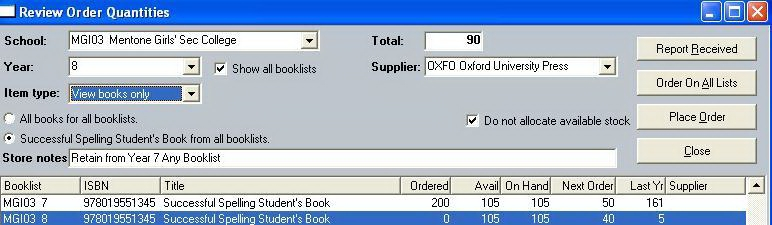

Pre-pack ordering can be approached in a number of ways. The order-arrangement window can be opened from either the Book-list or the Students Maintenance windows. It can also be opened from the Unders/Overs report-preparation window or from Bookscan's main menu.
Once you are viewing the book-list item of interest, double-clicking in the Next Order column lets you enter the number to be ordered.
The Ordered column displays how many unit-orders have been finalised for this item so far (this year). The Avail column shows how many units are on-hand and the last column recalls the previous year's order.
The selection controls, at the top of the window, can vary each others' effect. For example, if we clicked the AXIOMS OF GEOMETRY FOR CALARE PUBLIC SCHOOL Year 4 radio-button and then checked the View/order across all book-lists check-box, the list would show that title wherever it was used by any book-list. If we then looked at the higher radio-button, its caption would read All items for all booklists. If you pressed that button, all items on all book-lists would be listed. You could limit this selection by item-type as well, using the Item-type combo-box (to view only books or just stationery). Single-clicking (selecting) an item from the list changes the lower radio-button prompt to pertain to that title - so these controls combine to give access to any item on any list and to group related orders smartly.
Displaying the group (or single item) that you need to order, click the Place Order button. Bookscan asks for confirmation of the order before proceeding.

For single titles across multiple book-lists, you can employ the Order On All Lists button to avoid entering Next Order quantities line by line. This can be well-suited to stationery orders, which are not as likely to require separate store locations (identified, when printing the GRNs, by whatever goes into ).
For single titles you can also change the supplier you wish to order from.
Users must be aware that if there is stock on hand, those quantities will be placed on hold for pre-pack and the order-quantity reduced by the same amount. (To have the stock that are being held for pre-pack subtracted from Bookscan's calculations of stock availability you must set the appropriate formula under Utilities\System Options, on the Titles tab.)
The Report Received button gives a summary of ordering and receiving for the selection. For a more comprehensive view into the ordering equation, open the Overs And Unders reporting window.
Reporting Overs And Unders